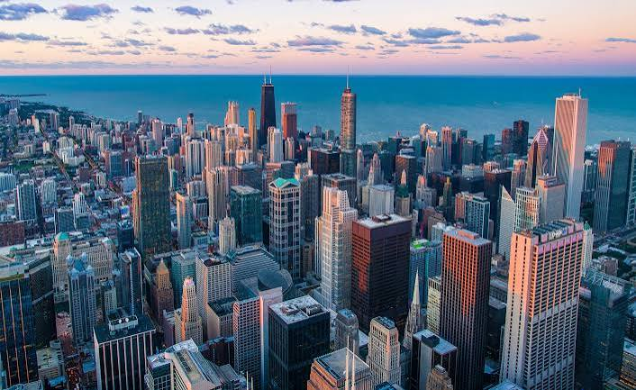

Illinois ist ein Bundesstaat der Vereinigten Staaten von Amerika. Er liegt im Mittleren Westen und grenzt im Nordosten an den Michigansee.
Der Name kommt aus der Algonkin-Sprache und dem Französischen und bezeichnet den Indianerstamm der Illiniwek oder Illini, der damals das Land bewohnte und dessen Name Das Volk bedeutet.
Als Ende des 17. Jahrhunderts die ersten französischen Siedler kamen, bezeichneten sie die Illini als „[les] Illinois“ (die Illini-schen, Illinois). Von 1712 an war das Gebiet unter
diesem Namen französische Kolonie, die die Briten 1765 übernahmen mit gleich geschriebenem, nun englisch ausgesprochenem Namen. So blieb es auch 1818, als Illinois Bundesstaat der
Vereinigten Staaten wurde.
Quellen- und Lizenzhinweis:
Dieser Text basiert auf dem Wikipedia-Artikel
Illinois
(geänderte Fassung) und steht unter der Lizenz
Creative Commons Attribution-ShareAlike 4.0 International (CC BY-SA 4.0).
Das Bild ist von
travelcircus.de